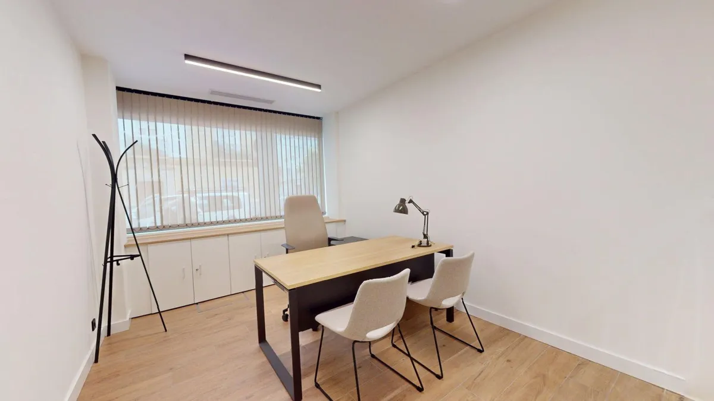

Cristina Ceccarelli
Abogada
La abogacía, desde el compromiso con las personas
Soy Cristina Ceccarelli, abogada. Entiendo mi profesión como una relación basada en la confianza y la responsabilidad.
Detrás de cada asunto hay una historia, unas circunstancias y unos intereses que merecen ser escuchados y defendidos con rigor, honestidad e implicación.
Practico una abogacía cercana, transparente y estratégica: combino conocimiento jurídico y atención personalizada para buscar soluciones reales. Porque no hay dos casos iguales, cada uno requiere tiempo, criterio y una estrategia propia.
Mi compromiso es acompañarte, asesorarte y defender tus derechos con independencia, claridad y determinación.

Especialidades
Derecho Civil
Toca para ver másDerecho civil y contractual
- Arrendamientos urbanos.
- Reclamaciones de cantidad.
- Incumplimientos contractuales.
- Resolución y rescisión de contratos.
- Responsabilidad civil contractual y extracontractual
- Negociación y resolución extrajudicial de conflictos.
- Procedimientos judiciales civiles.
- Especialista en sucesiones y herencias.
Extranjería e Inmigración
Toca para ver másExtranjería e Inmigración
- Autorizaciones de residencia y trabajo.
- Regularizaciones extraordinarias.
- Arraigo social, sociolaboral y socioformativo.
- Residencia de familiares de ciudadanos españoles.
- Nacionalidad española.
- Visados y estancias por estudios.
- Residencia no lucrativa.
- Nómadas digitales y profesionales altamente cualificados.
- Recursos y procedimientos administrativos de extranjería.
Responsabilidad Civil
Toca para ver másResponsabilidad Civil
- Accidentes de tráfico.
- Reclamaciones frente a compañías aseguradoras.
- Valoración del daño corporal.
- Indemnizaciones por lesiones temporales y secuelas.
- Reclamaciones por daños y perjuicios.
- Negociación con aseguradoras y procedimientos judiciales.
Derecho Bancario y de Consumo
Toca para ver másDerecho Bancario y de Consumo
- Cláusulas abusivas.
- Cláusulas suelo.
- Gastos hipotecarios.
- Reclamaciones frente a entidades financieras.
- Defensa de consumidores y usuarios.
- Reclamaciones por productos y servicios bancarios.
Derecho laboral
Toca para ver másDerecho laboral
- Despidos y extinciones contractuales.
- Reclamaciones de cantidad.
- Derechos y condiciones laborales.
- Conciliaciones y procedimientos judiciales laborales.
- Asesoramiento a trabajadores.
Dónde encontrarme
Mi despacho está en Virgen del Valle 6. Portal B- C, Los Remedios, Sevilla
.
Horario de atención
Lunes a jueves, de 9:00 a 18:00
Viernes, de 9:00 a 14:00